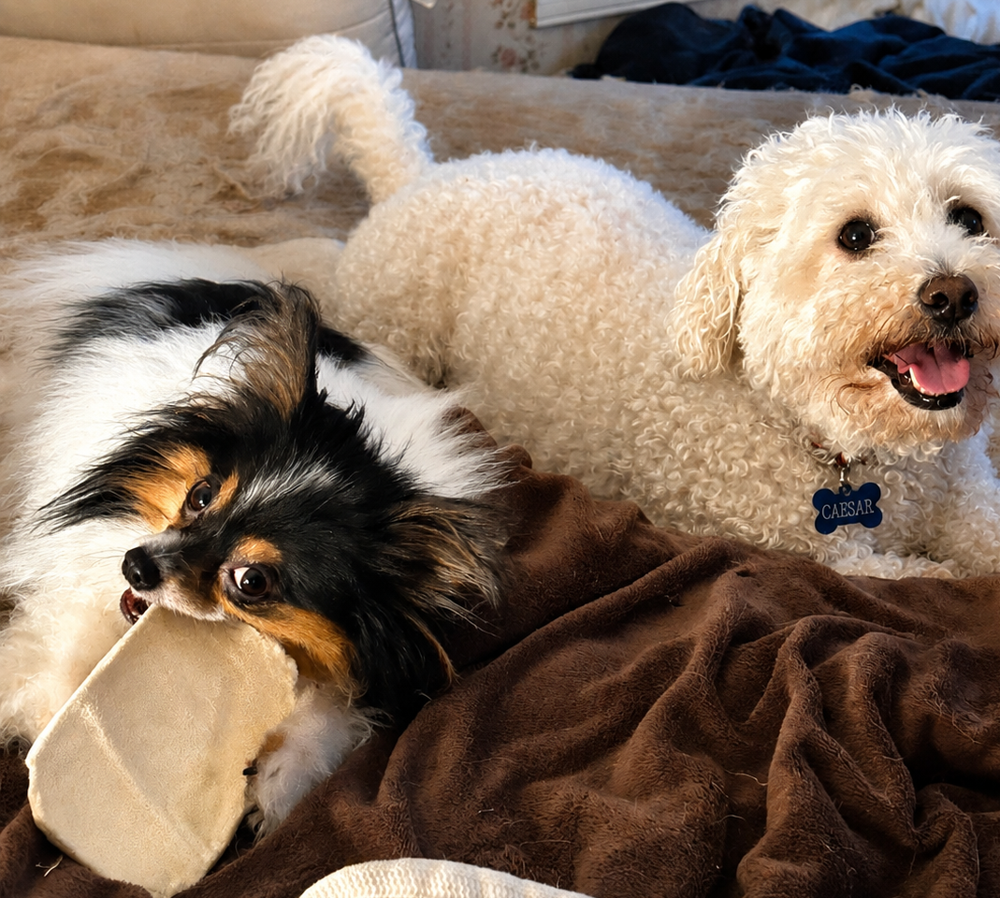

Leo & Caesar’s Journey Home
This bonded pair is adjusting wonderfully and thriving in temporary care while their journey continues. Donations may support food, supplies, veterinary needs, and transportation connected to their care and reunification plan.
Support Their Journey